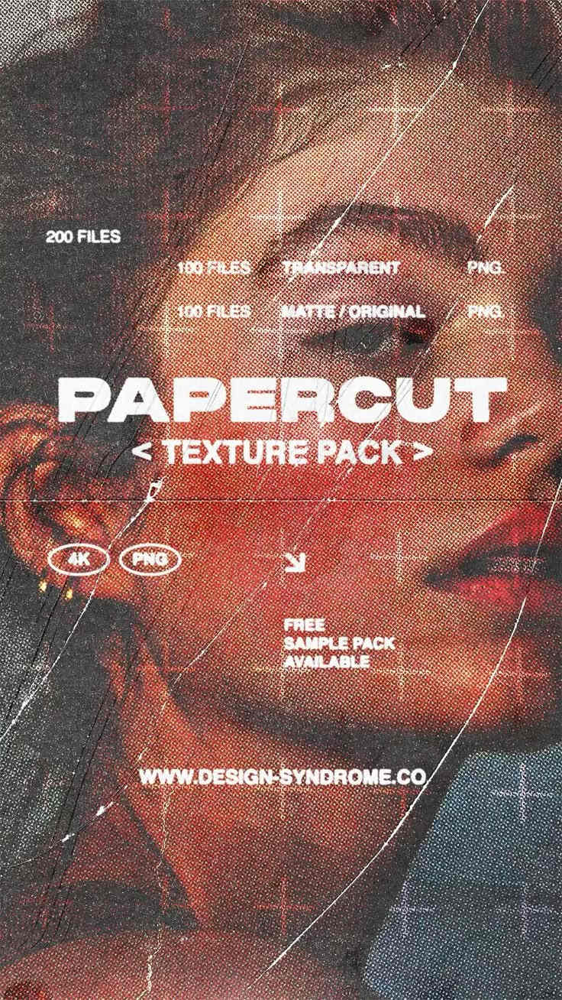
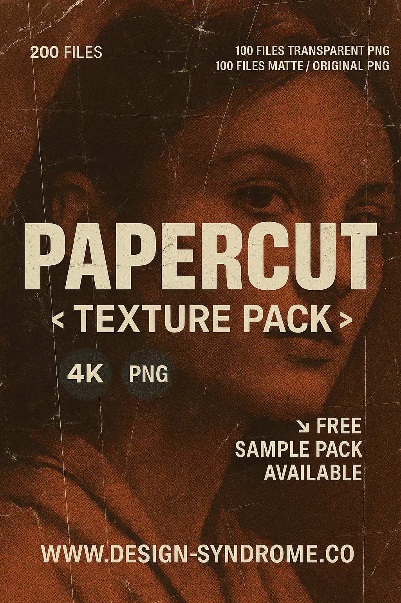

Okay, so it is a skill issue
When I first heard the hype around gpt-4 imagegen on twitter, I though design was solved. like the examples were so good. but then when I tried it out it sucked. It was basically of no use other than making ghibhli images.
Yesterday I tried something, I picked this image below from pinterest.
And gave it to gpt to analyze it. and then asked him to come up with a prompt to make this exact image. he gave me this prompt:
"Generate a promotional graphic for a digital 'Papercut Texture Pack.' The overall style is grunge, distressed, and vintage, evoking aged paper or a worn zine cover.
Background Image:
The background should feature a close-up, slightly desaturated image of a woman's face, primarily showing her right eye, nose, lips, and part of her ear and hair. Her gaze is soft and directed slightly off-camera. The image of the woman should be heavily processed with a prominent halftone dot pattern (CMYK-style dots if possible, with a reddish-brown dominant hue) and overlaid with various textures.
Color Palette:
The dominant colors for the background should be warm, earthy tones: deep reds, browns, and desaturated oranges. All text elements must be bright white for maximum contrast.
Textures and Overlays:
The entire image must be overlaid with heavy grunge textures, including:
Realistic paper folds and creases (some sharp, some soft).
Visible scratches, scuffs, and dust particles.
A subtle, faded grid pattern (thin lines, possibly reddish or white) visible across the image.
A general film grain or noise effect.
Typography and Text Elements (all in white, sans-serif font):
Main Title (Center):
Text: "PAPERCUT"
Font: Very bold, uppercase, sans-serif (industrial or stencil-like feel, but solid letters).
Effect: Letters should have a subtle internal texture or a slight "cutout" appearance, enhancing the papercut theme.
Placement: Prominently centered horizontally, approximately mid-upper third of the image.
Subtitle (Center, below Main Title):
Text: "< TEXTURE PACK >" (including the angle brackets).
Font: Sans-serif, uppercase, smaller than the main title but still bold.
Placement: Directly beneath "PAPERCUT."
Informational Text (Top Left):
Text: "200 FILES"
Font: Small, sans-serif, uppercase.
Placement: Upper left quadrant.
Informational Text (Top Right/Center-Right):
Line 1: "100 FILES TRANSPARENT PNG" (with "PNG" aligned to the right of "TRANSPARENT")
Line 2: "100 FILES MATTE / ORIGINAL PNG" (with "PNG" aligned to the right of "ORIGINAL")
Font: Small, sans-serif, uppercase.
Placement: Upper right quadrant, below the woman's eye level.
Badges (Left, below Main Title level):
Two circular badges.
Left Badge Text: "4K" (white text on a dark, almost black circular background).
Right Badge Text: "PNG" (white text on a dark, almost black circular background).
Font: Sans-serif, uppercase.
Placement: To the left of the vertical center, slightly below the "PAPERCUT" baseline.
Informational Text (Right, below Badges level):
Text: "FREE SAMPLE PACK AVAILABLE" (stacked in three lines: "FREE", "SAMPLE PACK", "AVAILABLE").
Font: Small, sans-serif, uppercase.
Placement: Right of the vertical center, roughly aligned horizontally with or slightly below the badges. Include a small, stylized downward-right pointing arrow icon (a simple 'L' shape rotated) above this text block.
Website URL (Bottom Center):
Text: "WWW.DESIGN-SYNDROME.CO"
Font: Sans-serif, uppercase, medium size (larger than other informational text but smaller than subtitle).
Placement: Bottom of the image, centered.
Composition and Lighting:
The composition should feel layered, with text appearing on top of the textured image.
Lighting should be diffuse, enhancing the textures, without harsh shadows from the text itself.
Ensure text legibility against the complex background, perhaps with a very subtle drop shadow or outline on the text if needed, but prioritize a flat, integrated look if possible.
Overall Impression:
The final image must look like a physical, aged print that has been scanned, complete with imperfections. It should be atmospheric, tactile, and instantly communicate the product's aesthetic."
And the output gpt gave is this image below.
So I guess it's a skill issue afterall, if you know design gpt-4 imagegen is a great tool. if not you will not be able to produce great designs.